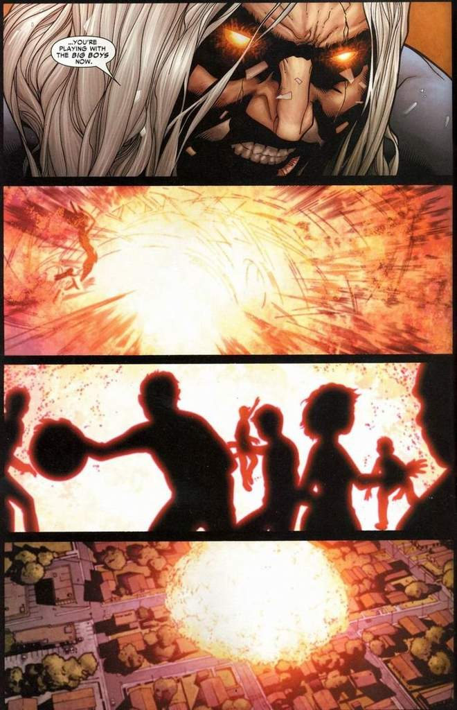
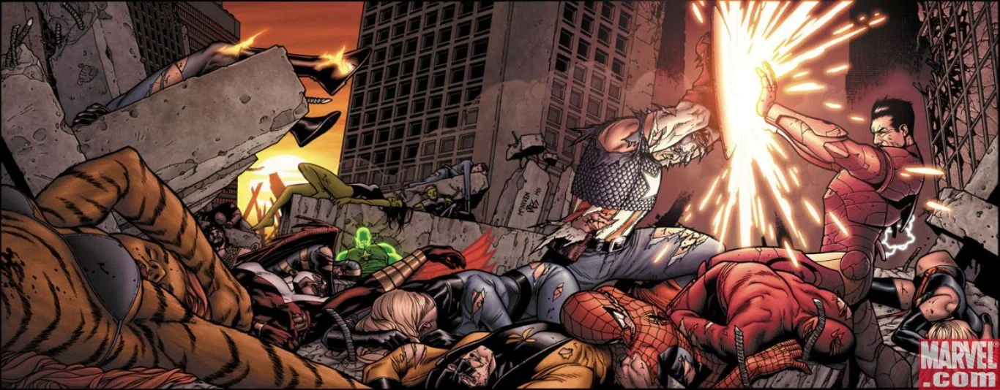
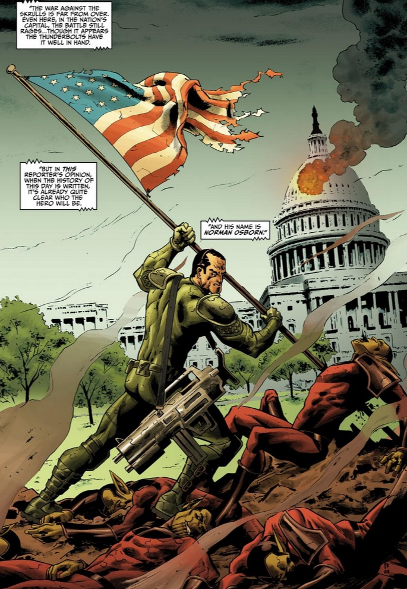
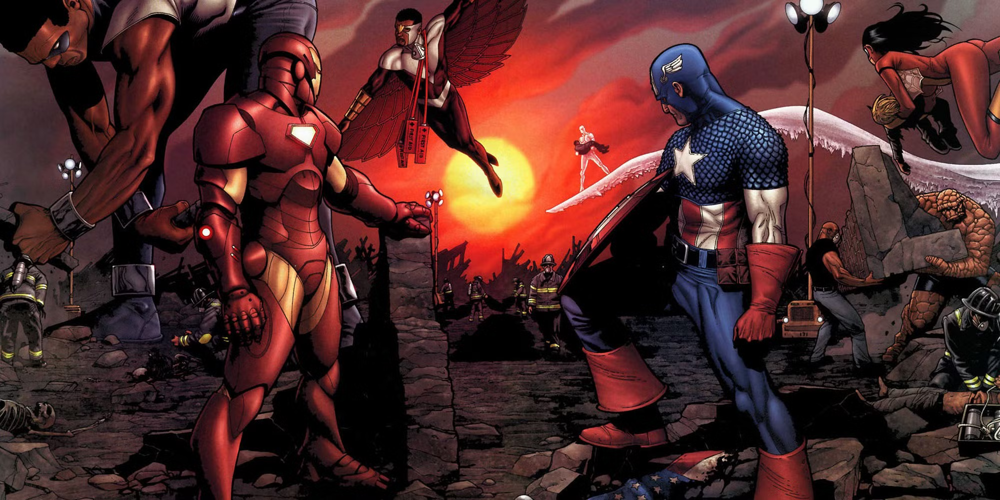

Quem estava certo na Guerra Civil?
Essa é uma discussão muito comum, porém muito interessante dentro dos círculos nerdísticos, principalmente
porque o lançamento do filme em 2016 popularizou ainda mais o tópico, afinal, filmes têm um alcance muito
maior
que quadrinhos.
Por mais que as duas versões tenham um conceito-base similar, o quadrinho possui mais nuances, na minha
opinião,
e portanto será o foco da discussão neste artigo.
O início
Todo o conflito se inicia em Civil War #1, de junho de 2006. A edição começa
mostrando o evento que dará início a toda a trama: o desastre de Stamford.
Tudo começa quando um grupo de super-heróis jovens e sem treinamento decide tentar prender
um grupo de vilões que havia escapado da prisão para participar de um programa de televisão.
Porém, por sua falta de experiência, os jovens heróis não conseguem manter o controle da situação,
o que faz a batalha escalar rapidamente e sair da casa onde os vilões estavam escondidos, chegando
ao pátio de uma escola, onde um dos malfeitores usa seus poderes para causar uma explosão gigantesca
que mata todos no local.

Assim como na adaptação cinematográfica, esse evento faz o governo iniciar uma iniciativa de
registro de super-heróis, buscando evitar que super-humanos ajam de forma inconsequente e causem
desastres como o de Stamford.
Essa iniciativa divide toda a comunidade super-humana, com os dois principais representantes de cada
lado sendo o Homem de Ferro, que está de acordo com o registro, e o Capitão América, que é contra ele.
O Capitão tem como principal argumento o fato de que a centralização das informações
dos super-heróis abre espaço para que todos eles sejam derrubados de uma vez: se um vilão tiver acesso a essas
informações, todos os heróis estariam vulneráveis.
Já o Homem de Ferro acredita que, dessa forma, seria possível tornar as ações dos super-heróis mais
organizadas e efetivas, aumentando a segurança da população e diminuindo tanto as casualidades civis
quanto as super-humanas.
Essa separação da comunidade resulta, como o próprio título implica, em uma guerra civil entre
os super-heróis, com o lado do Homem de Ferro sendo apoiado pelo governo e o do Capitão América
passando a ser considerado fora da lei.
O conflito escala cada vez mais, culminando em uma batalha final entre ambos os lados no centro da
cidade de Nova York.

Ao fim dela, o Capitão América decide se render, não por ter mudado de ideia sobre o registro
dos super-heróis, mas por perceber o quão grandes estavam sendo os impactos do conflito
para os cidadãos comuns. Para ele, não fazia sentido lutar uma luta que prejudicasse aqueles
que ele jurou proteger.
Com isso, Tony Stark se tornou o novo diretor da S.H.I.E.L.D. e foi responsável por registrar
os heróis e prender aqueles que ficaram do lado do Capitão durante a Guerra Civil. De fato, ele foi
capaz de aumentar a eficiência no combate ao crime e reduzir as fatalidades. Porém, acho importante
que olhemos para as consequências desses eventos a longo prazo.
As consequências
Alguns anos após a Guerra Civil, aconteceu exatamente o que o Capitão temia:
vilões se infiltraram na S.H.I.E.L.D. e tiveram acesso às informações dos super-heróis.
Durante os eventos da Invasão Secreta, quando os Skrulls infiltrados na Terra tentaram tomar o poder
do planeta, Tony Stark não foi capaz de lidar bem com a situação, e o conflito escalou muito
rapidamente.
Os Skrulls quase matam o presidente dos Estados Unidos, porém Norman Osborn, o Duende Verde,
mata a rainha dos invasores, encerrando assim a ameaça Skrull.

Com isso, Tony Stark perde sua posição como líder da S.H.I.E.L.D. e passa a ser um criminoso procurado
por suas ações durante a invasão, enquanto a organização é reformulada por Norman Osborn, tornando-se
a H.A.M.M.E.R.
Norman Osborn começa a sistematicamente eliminar super-heróis (tarefa extremamente fácil com acesso
às informações coletadas por Tony Stark), substituindo-os por vilões sob seu comando e efetivamente
criando um governo secreto com ele como líder.
Eventualmente, eles são derrubados, mas aquilo que o Capitão dizia que aconteceria realmente
ocorreu.
Conclusão
Admito que posso ser um tanto tendencioso para o lado do Capitão (quem leu
a aba Sobre Mim deve entender o porquê), porém acredito que ambos os lados tinham bons pontos.
Quem você acha que estava certo: o Capitão América ou o Homem de Ferro? Deixe seu voto e seu comentário
me dizendo, e obrigado por ler até o final!

Quantidade de votos
0
Proporção de votos do Capitão América
0
Proporção de votos do Homem de Ferro
0
0/1000